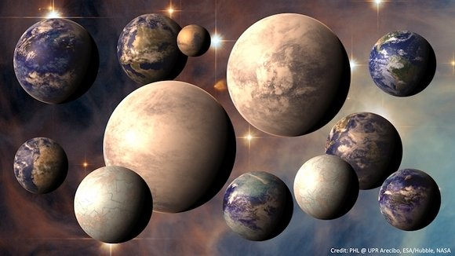

Hello guys,
i would like say about habitabled planets for real life.
Kepler, Giese, Europe, Titan and more habitable worlds are here by us.
I ask you because Xen world isn’t here and it is unhabitabled from our correct universum, galaxies and solar Systems.
NASA has found some habitabled planets like unknown earths.
And see about correct habitable ego-planets:

Too many different planets / different ego-earths are habitabled.
But xen and mars are not correct habitable because they have not germs for life.
Crying history Since before 4,1 to 2,5 billions years:
Mars was given before 3.7 billions years to the second world. Since Mars was caught by the great meteorite. And the earth has luck because it doesn’t get crash by big Meteorite and it get a lot of water and Looks like young mars and sky has color pink and water has color green. And before ca 1,5 billions years was the earth changed into Color blue for water and it will be habitable…
That is correct. Sorry for Mars  because it got big crash and breaked his world off and it would like get habitable but hang off Long time
because it got big crash and breaked his world off and it would like get habitable but hang off Long time
In ca. 7 billions years ( after red giant ) .
And you would know about real xena?
Real Name of xena is “Planet Eris” and it has not life.
Why do we think because xen(o) or Xen(a) are not real world. They just are faked world Please believe me right! I won’t lie because xen isn’t real life by us.
We would like to say about current habitable world with current planets or moons  I want get for Source-Engine because Source Engine would like to convert from xen into Giese World.
I want get for Source-Engine because Source Engine would like to convert from xen into Giese World.
Big thanks and cheers
SourceSkyBoxer